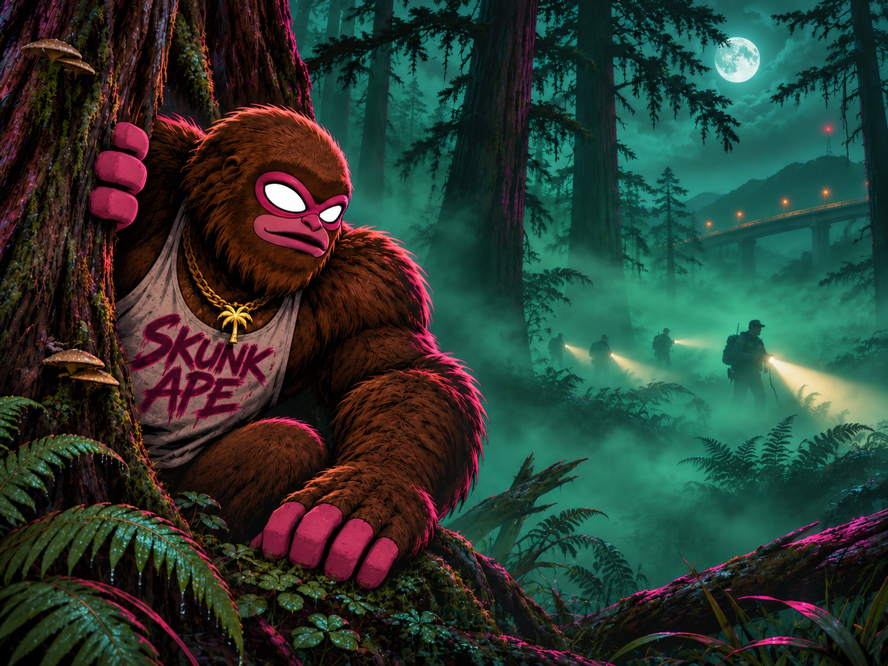
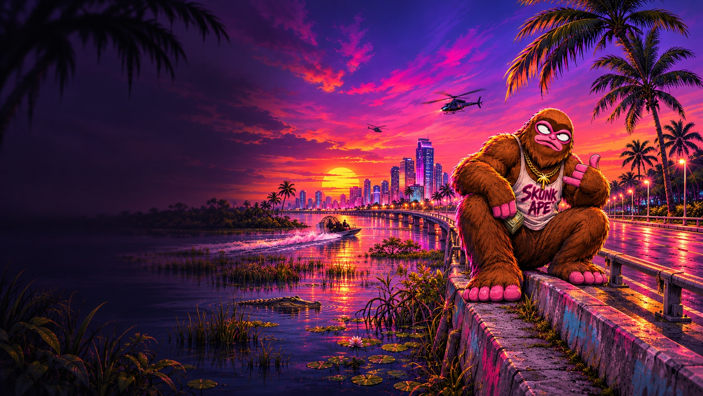
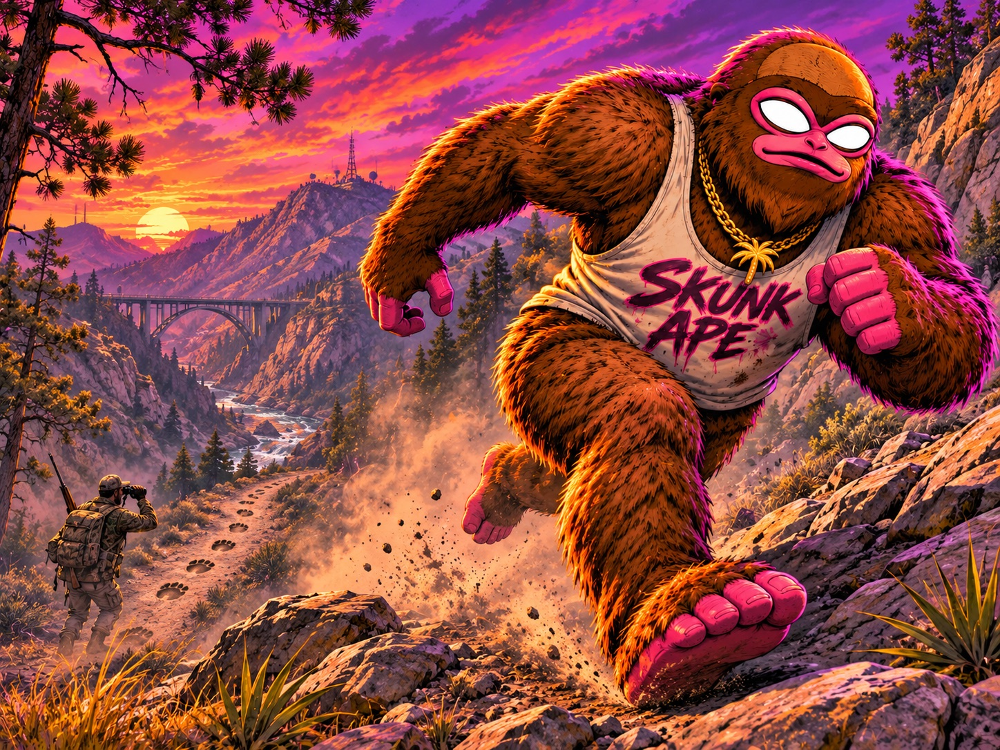
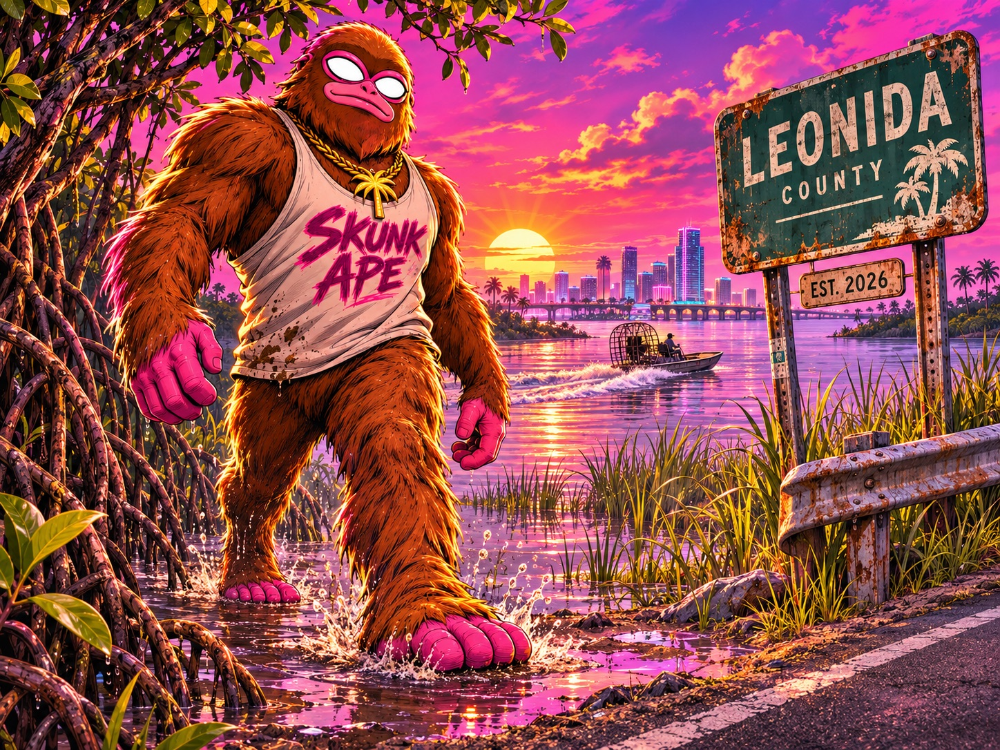
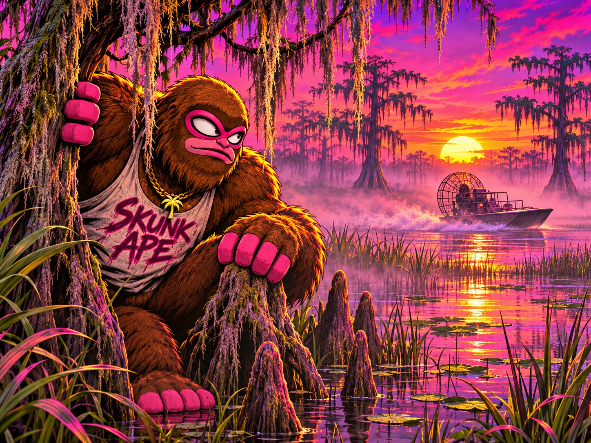
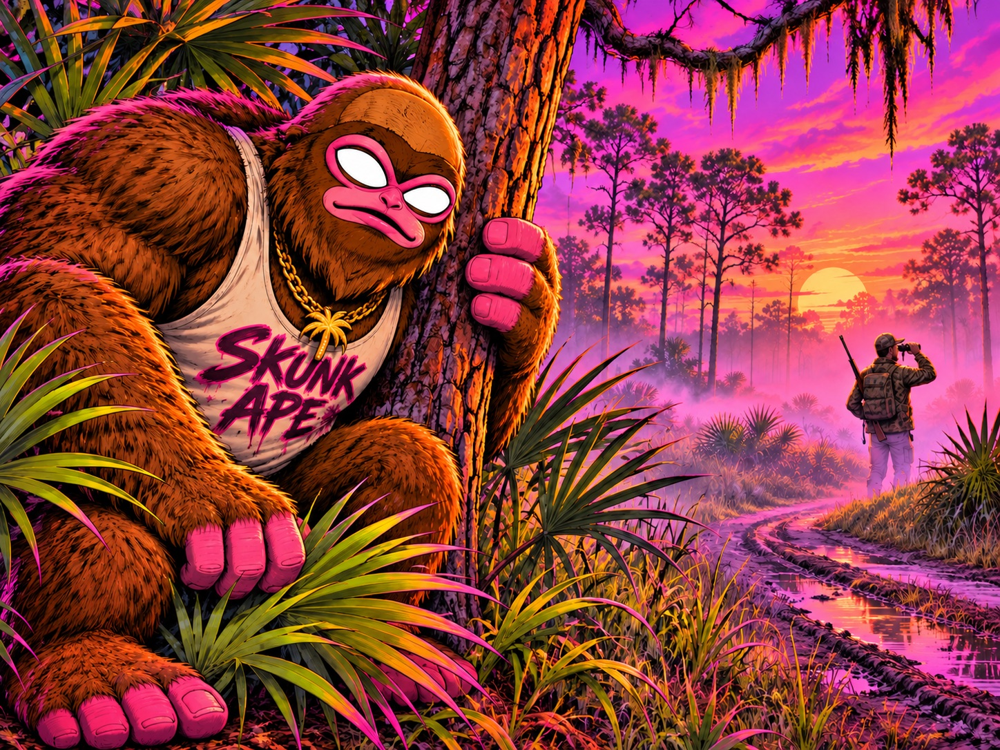
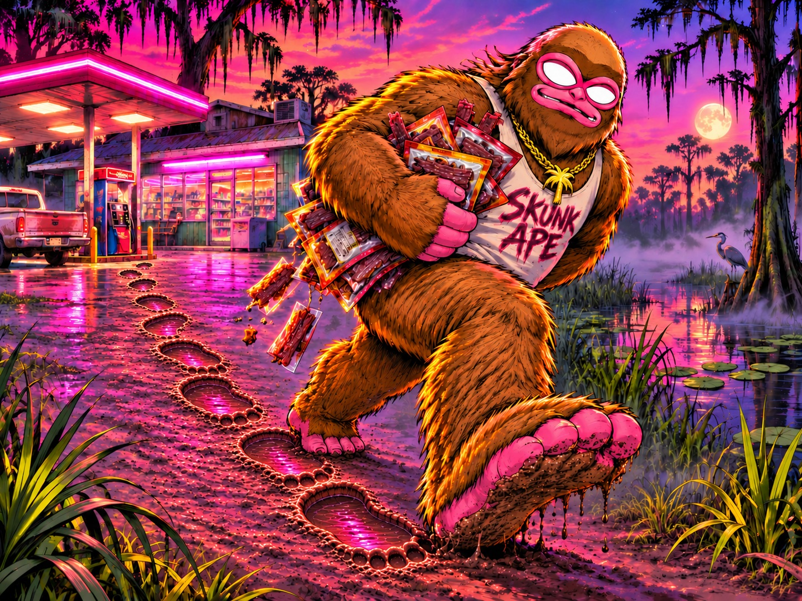
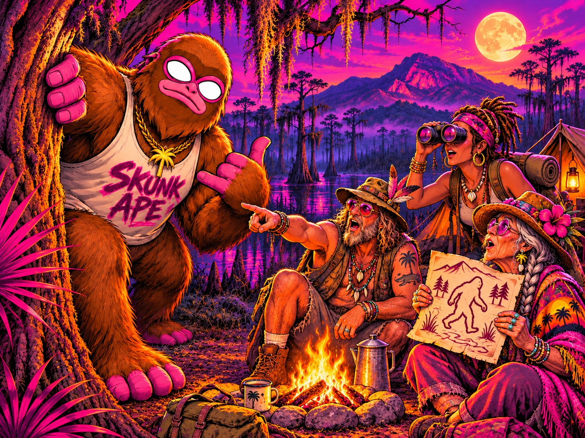

FILE 01 · DECADES OF SIGHTINGS
THE MYTH
For decades, locals have whispered about something moving through Leonida's deepest swamps. Most dismissed it as folklore. The stories never stopped.

CASE FILE #LEO-0001 · 3:12 AM
Deep in the swamps of Leonida, something has been hiding for decades. The legend was leaked. The hunt begins. $SKUNK — FRONT-RUNNING GTA 6.
UNTIL THE HUNT OPENS IN LEONIDA · NOV 19, 2026
[CONTRACT ADDRESS DROPS AT LAUNCH]
This page is the only source of the real CA. Prints in the mud can be faked. This can't.
LEONIDA CASE FILE · DECADES UNEXPLAINED
Locals call it the Skunk Ape. A creature so mysterious that most believe it is nothing more than a legend.
But when GTA 6 development files leaked, the legend resurfaced—hidden in the shadows, buried in the files, waiting to be discovered.
As the world prepares to enter Vice City, we're hunting one of Leonida's biggest mysteries. $SKUNK is front-running GTA 6.

FILE 01 · DECADES OF SIGHTINGS
For decades, locals have whispered about something moving through Leonida's deepest swamps. Most dismissed it as folklore. The stories never stopped.

FILE 02 · GTA 6 DEVELOPMENT LEAK
Then the GTA 6 development files leaked. Buried among the world events was a name Leonida already knew: Skunk Ape sighting. The legend had entered the game.

FILE 03 · VICE CITY AWAITS
As the world prepares to enter Vice City, millions of players are about to search Leonida for the creature hidden in the leaks. The hunt begins now.
LEONIDA SHERIFF'S OFFICE · INCIDENT TRANSCRIPT
Re: decades of unexplained wildlife reports from the Leonida wetlands. Subject locally known as the Skunk Ape.
For years, locals reported prints, missing supplies and something enormous moving beyond the cypress line.
Then the GTA 6 development files leaked. Buried in the world events: Skunk Ape sighting.
Hidden in the shadows. Buried in the leaks. Waiting to be discovered.
As the world prepares to enter Vice City, the search for one of Leonida's biggest mysteries begins.
Case status: OPEN. Case name: SKUNK APE ($SKUNK).
THE LEAKED FILES
The development files put the Skunk Ape legend back on the map. Leonida's swamps are enormous. These are the places the $SKUNK community will search first.

01
Fog, mangroves, airboats. A random encounter that only spawns in heavy fog before sunrise, deep in the wetlands.

02
A world event buried in the GTA 6 development files brought the legend back. Somewhere in Leonida, the sighting is waiting to trigger.

03
Rural gas stations keep reporting stolen jerky. Mark the robberies on the map and they draw a line straight into the trees.

04
Rockstar's own Leonida guide teases mystics in the backwoods. We think they're the first group in Leonida to actually catch him in the open.
THE LEAK IS ALREADY SPREADING
The development leak turned an old Leonida legend into one of GTA 6's most intriguing mysteries. Follow the trail here.
Four steps from Vice City to the Grassrivers.
STEP 01
Phantom, Solflare or Backpack. Write your seed phrase on paper. Nobody legit will ever ask for it.
STEP 02
Buy SOL on an exchange you trust and send it to your wallet. Airboat fuel.
STEP 03
Only from this site: [YOUR DOMAIN]. Any other "$SKUNK" address is a fake print.
STEP 04
Paste the CA on [YOUR DEX], set your amount, confirm. Welcome to the search party.
Never trust a CA from a DM, a reply, or a stranger in the swamp. This page is the only source.